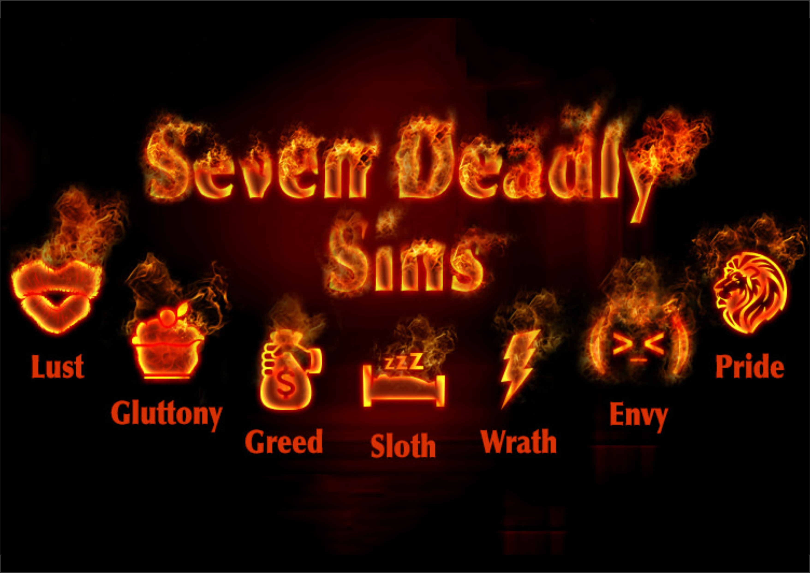
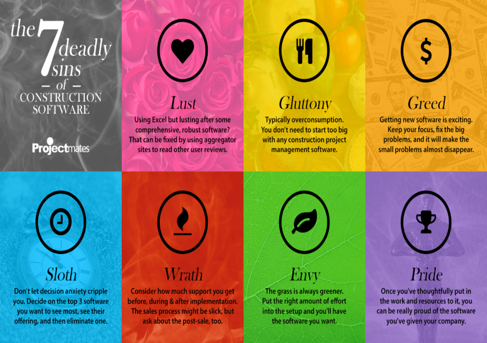

People have always been immoral, shiftless, and self-gratifying. For ages, humankind struggled to find a conceptual system to operationalize their spiritual shortcomings. The seven types of deadly sins are as follows:
It is excessive belief in one's own abilities that interferes with the individual's recognition of the grace of God. It has been called the sin from which all others arise. Pride is also known as Vanity. |
It is the desire for material wealth or gain, ignoring the realm of the spiritual. It is also called Avarice or Covetousness. |
It is an inordinate craving for the pleasures of the body. |
It is the desire for others' traits, status, abilities, or situation. |
It is an inordinate desire to consume more than that which one requires. |
It is manifested in the individual who spurns love and opts instead for fury. It is also known as Anger. |
It is the avoidance of physical or spiritual work. |